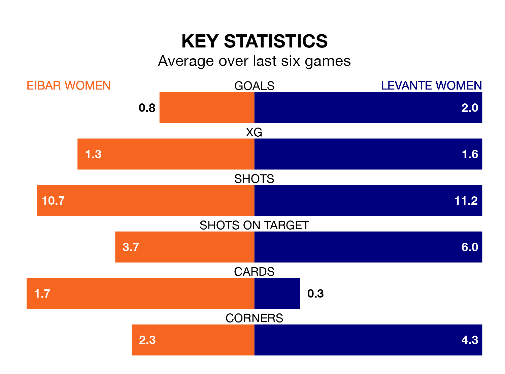

Mid-season relegation candidates Eibar Women face a challenge against high-flying Levante Women at Instalaciones de Unbe on Sunday.
Eibar Women are 13th in the Liga F table, and have picked up four wins and two draws in their 17 games to date.
Levante, meanwhile, are third in the standings with 38 points, having won 11 and drawn five, and are 11 points behind table-toppers Barcelona Women.
With Emma Holmgren between the sticks, Levante can rely on one of the league's safest pair of hands. She has kept seven clean sheets in her 14 appearances this season, and only one other 'keeper – Barcelona Women's Catalina Thomas Coll Lluch – has been able to prevent the opposition scoring on more occasions in Liga F.
In Eibar's net, María Miralles Gascón has three clean sheets in 14 games. She has conceded a goal every 74 minutes, more than twice as often as the 158 minutes between goals for Holmgren.
With 11 goals in 17 games so far this season, the hosts are the league's second-lowest scorers with 0.6 goals per game. And they are conceding more than average, letting in 35 goals at a rate of 2.1 per game.
The away side, meanwhile, are above average scorers, with 1.8 goals per game, compared to a league average of 1.6. They have conceded 0.5 goals per game.
Eibar are in mixed form in Liga F, with two wins and a draw from their last six games.
With four wins and two draws over that period, Levante's form is much better – they have taken 14 points from 18, compared to Eibar's seven.
In the last five years, Eibar and Levante have played each other on five occasions. Levante won four of them and they drew once.
On average, Eibar scored 0.6 goals and Levante 2.8 in those matches.
Their last meeting was on November 25, when Levante won 3-0 at home.
Eibar's last match was on February 10, a 1-1 draw against Levante Las Planas, with Ane Campos Andueza getting the goal for Eibar.
Levante drew 1-1 with Barcelona Women last time out, on Wednesday, with Alba María Redondo Ferrer on the scoresheet.
Updated: 13:04 (UTC), 16/02/24